Candidate-pool ranks on CARE v2 α (H=10, mean-normalized). Not a global trajectory ranking. High α is not labeled as a key action.
pick up the black bowl between the plate and the ramekin and place it on the plate
| pick | rank | α | d | ep | t frame | window | max-Δ | notes |
|---|---|---|---|---|---|---|---|---|
| high | 1/12 | 3.099 | 6.345 | 1275 | 106 | [106, 115] | 114 | full ±1s |
| mid | 6/12 | 1.794 | 3.673 | 1282 | 11 | [11, 20] | 17 | full ±1s |
| low | 12/12 | 0.867 | 1.776 | 1597 | 26 | [26, 35] | 27 | full ±1s |
ep 1275, timestamp frame 106, α=3.099, window [106, 115], max-Δ frame 114.
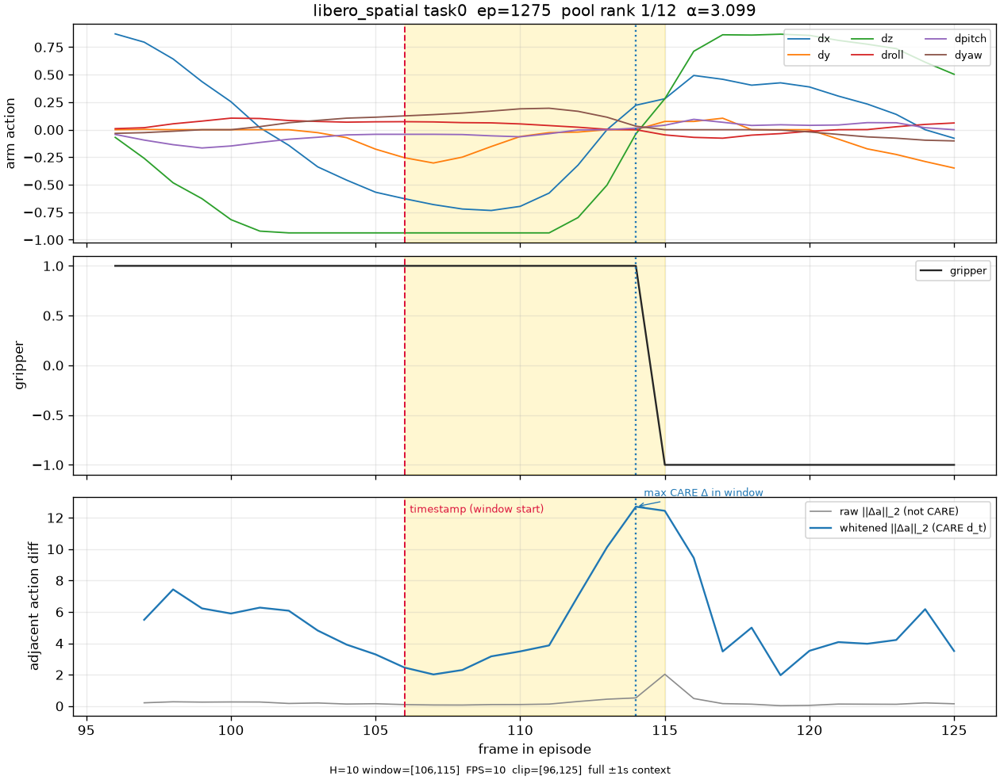
ep 1282, timestamp frame 11, α=1.794, window [11, 20], max-Δ frame 17.
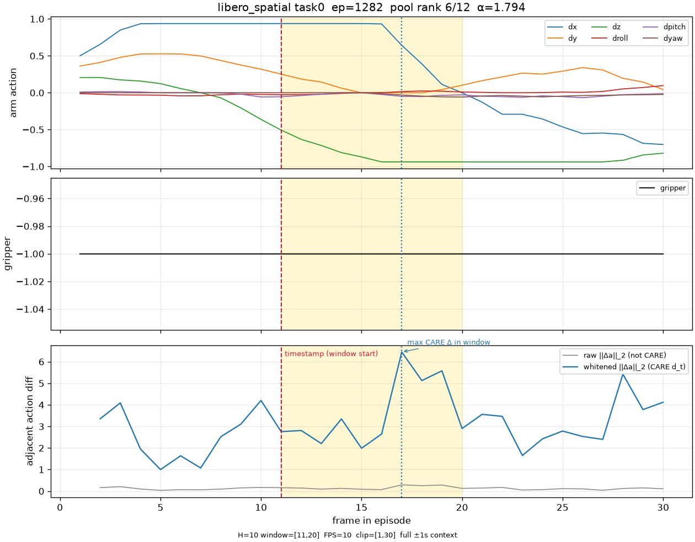
ep 1597, timestamp frame 26, α=0.867, window [26, 35], max-Δ frame 27.
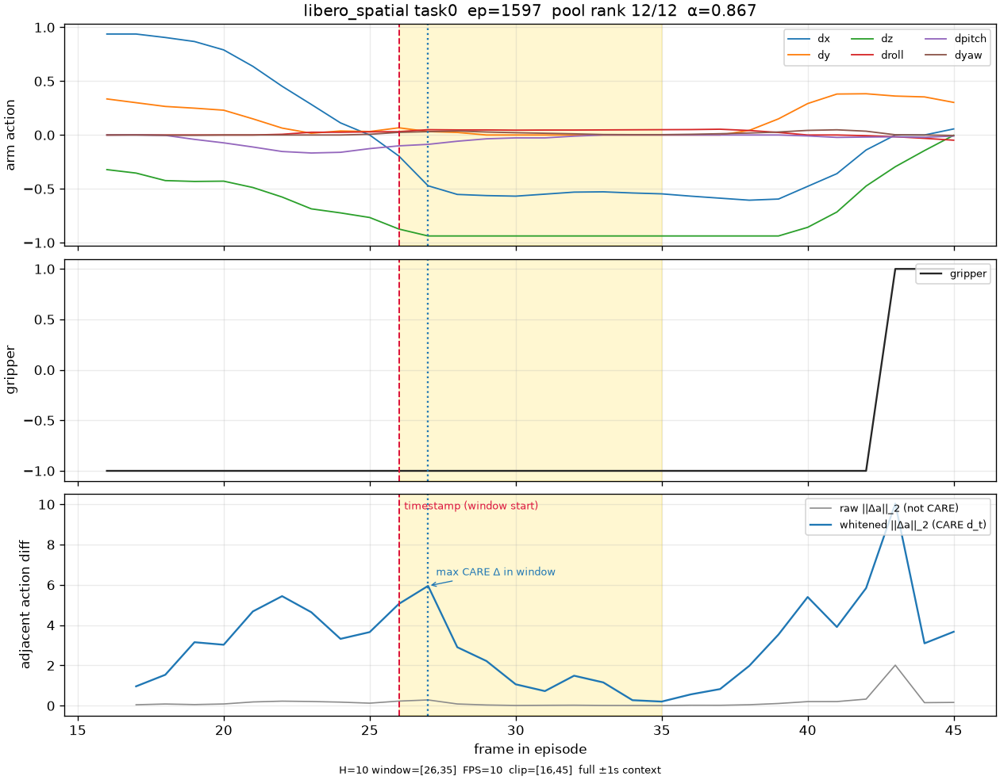
pick up the alphabet soup and place it in the basket
| pick | rank | α | d | ep | t frame | window | max-Δ | notes |
|---|---|---|---|---|---|---|---|---|
| high | 1/12 | 1.491 | 3.053 | 905 | 67 | [67, 76] | 73 | full ±1s |
| mid | 6/12 | 1.133 | 2.319 | 825 | 65 | [65, 74] | 71 | full ±1s |
| low | 12/12 | 0.214 | 0.439 | 945 | 100 | [100, 109] | 106 | full ±1s |
ep 905, timestamp frame 67, α=1.491, window [67, 76], max-Δ frame 73.
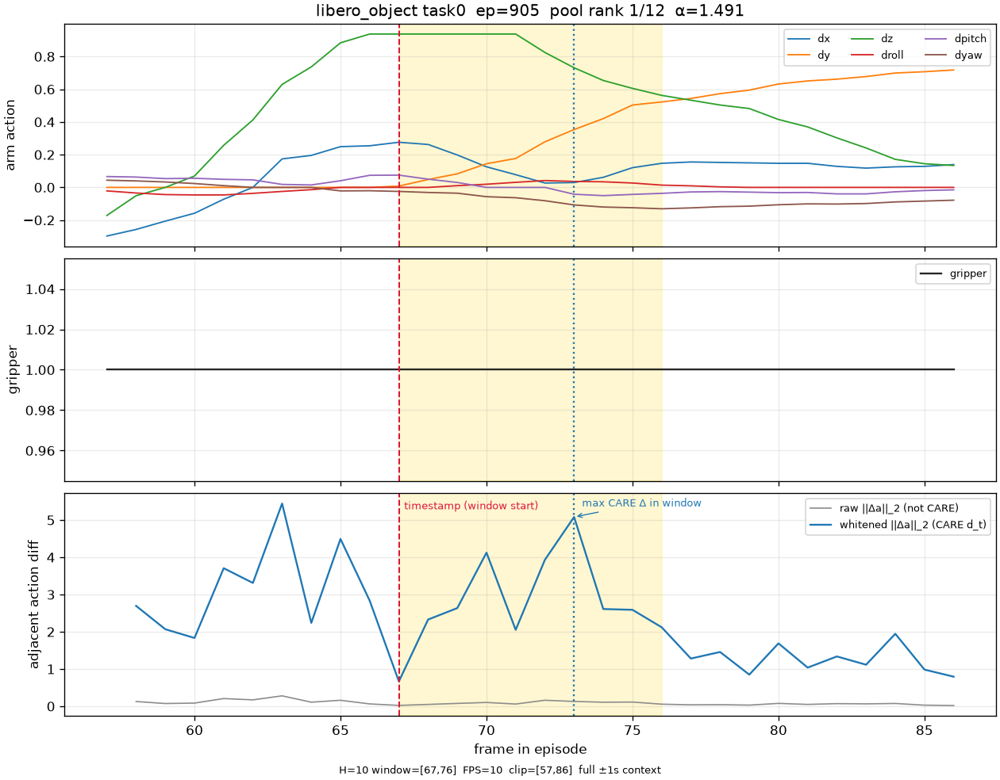
ep 825, timestamp frame 65, α=1.133, window [65, 74], max-Δ frame 71.
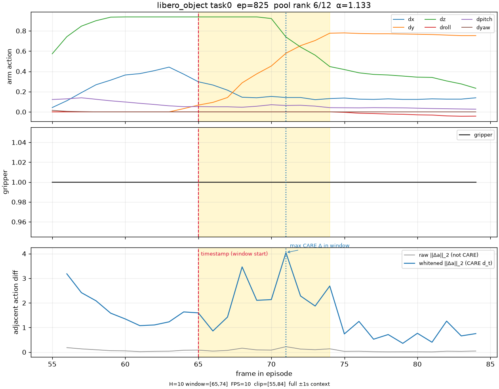
ep 945, timestamp frame 100, α=0.214, window [100, 109], max-Δ frame 106.
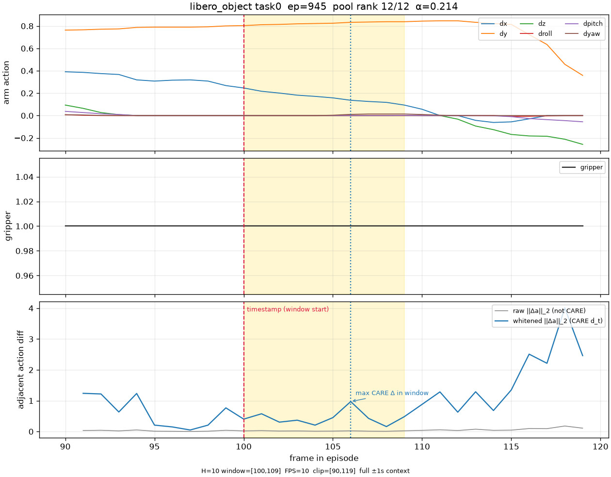
open the middle drawer of the cabinet
| pick | rank | α | d | ep | t frame | window | max-Δ | notes |
|---|---|---|---|---|---|---|---|---|
| high | 1/12 | 1.517 | 3.106 | 497 | 88 | [88, 97] | 92 | full ±1s |
| mid | 6/12 | 1.091 | 2.234 | 779 | 52 | [52, 61] | 59 | full ±1s |
| low | 12/12 | 0.169 | 0.347 | 780 | 97 | [97, 106] | 98 | full ±1s |
ep 497, timestamp frame 88, α=1.517, window [88, 97], max-Δ frame 92.
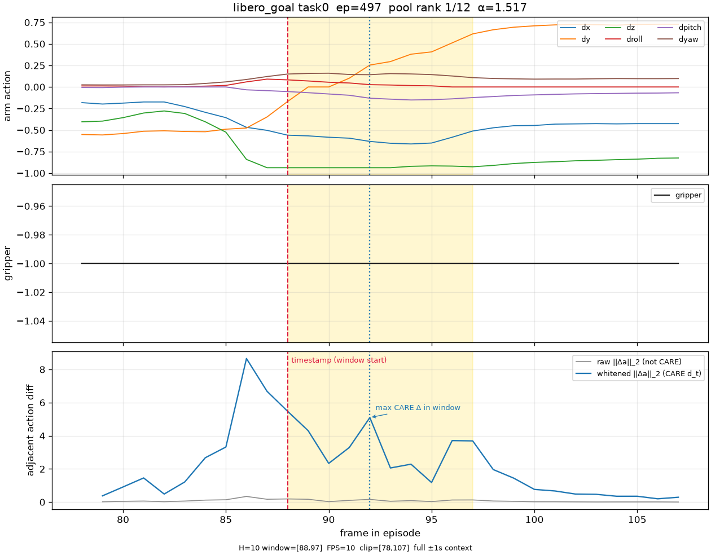
ep 779, timestamp frame 52, α=1.091, window [52, 61], max-Δ frame 59.
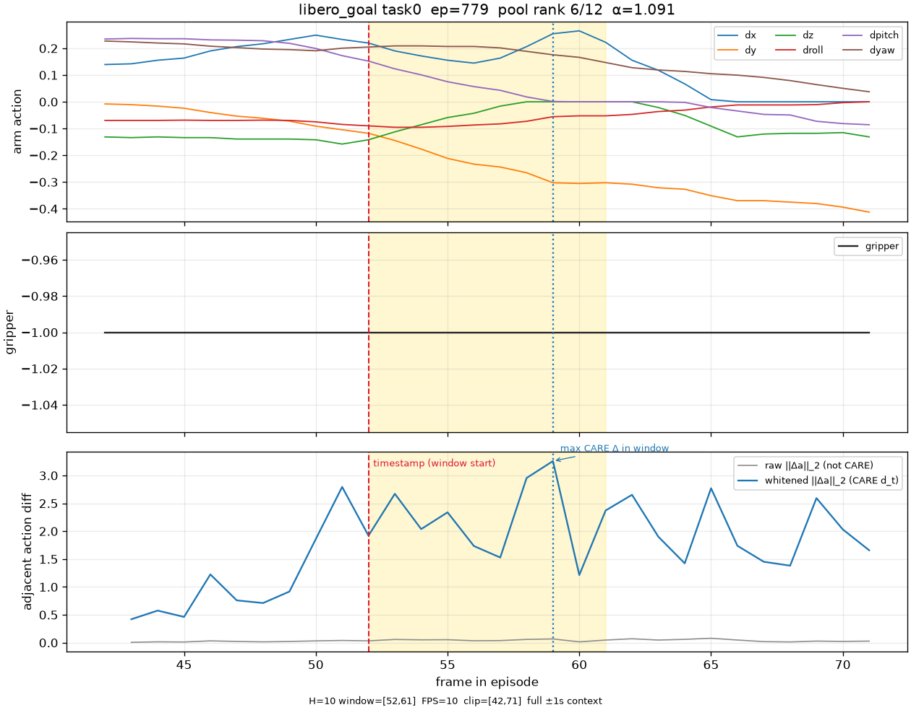
ep 780, timestamp frame 97, α=0.169, window [97, 106], max-Δ frame 98.
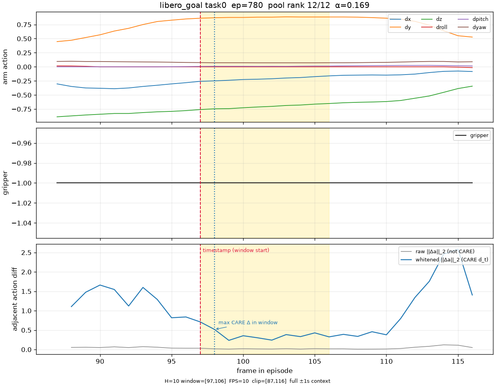
put both the alphabet soup and the tomato sauce in the basket
| pick | rank | α | d | ep | t frame | window | max-Δ | notes |
|---|---|---|---|---|---|---|---|---|
| high | 1/12 | 1.804 | 3.693 | 156 | 213 | [213, 222] | 218 | full ±1s |
| mid | 6/12 | 0.734 | 1.503 | 340 | 271 | [271, 280] | 279 | post-context truncated: requested 10 frames (1s at 10 FPS), got 1 |
| low | 12/12 | 0.290 | 0.594 | 317 | 1 | [1, 10] | 10 | pre-context truncated: requested 10 frames (1s at 10 FPS), got 1 |
ep 156, timestamp frame 213, α=1.804, window [213, 222], max-Δ frame 218.
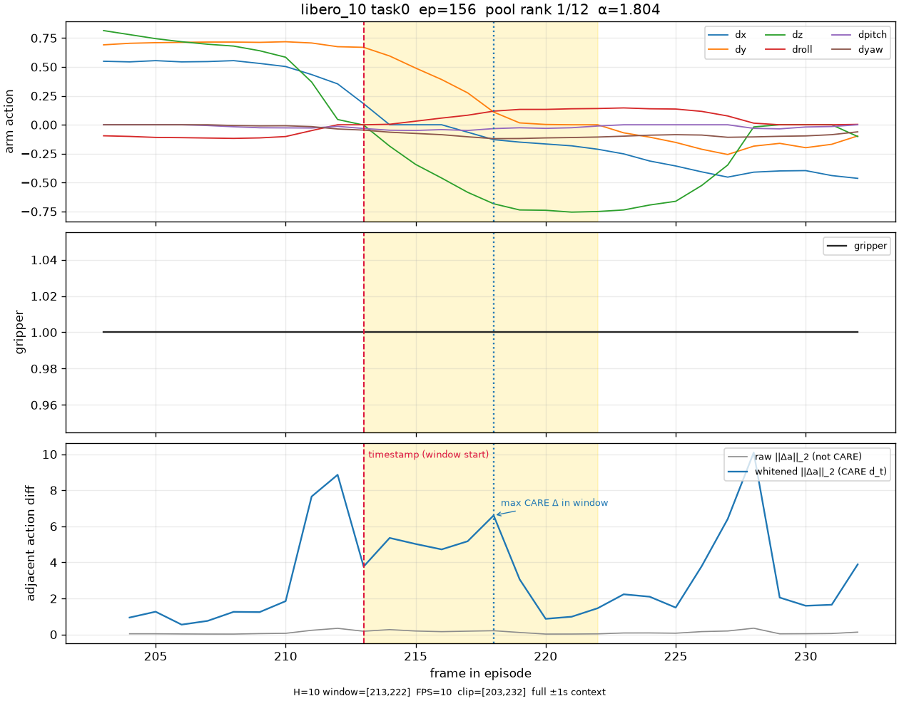
ep 340, timestamp frame 271, α=0.734, window [271, 280], max-Δ frame 279.
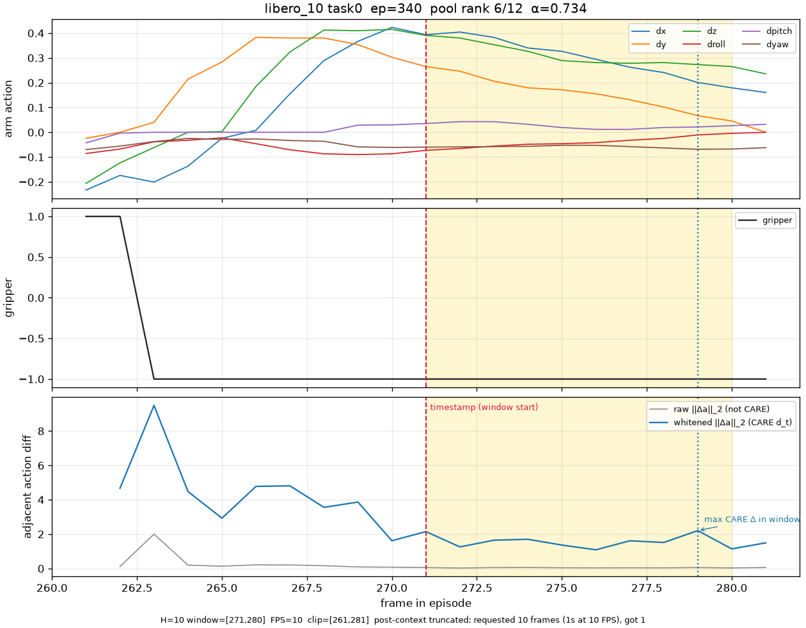
ep 317, timestamp frame 1, α=0.290, window [1, 10], max-Δ frame 10.
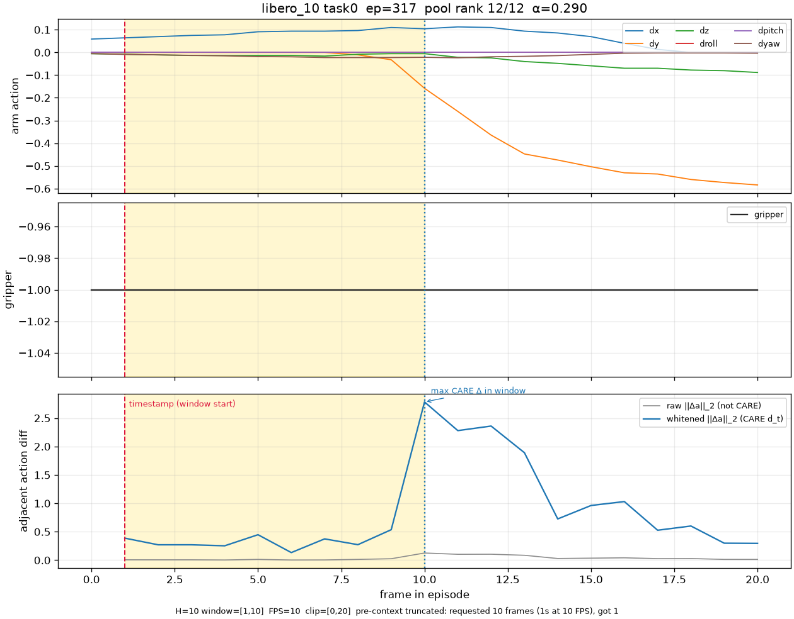